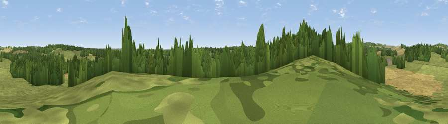

Viewpoint near Damerham
#43401 in England · top 82% of its area beats it · near Damerham · footpathWhere it is
The exact computed spot (SU 10225 14875). Click the marker for map links.
Public access: a public right of way passes within 5 m of this spot. Computed from Natural England's CRoW access layer and OpenStreetMap rights of way — not the legal definitive map. Always verify locally.
The view, rendered

A 360° render of this exact spot computed from the terrain model, tree cover and land cover — summer colours, afternoon light, calibrated against photographs of famous viewpoints. Real trees, hedges and buildings will differ in detail.
The panorama
Grey silhouette: terrain skyline in each direction (720 bearings, Earth curvature and refraction included). Dashed green: skyline with trees (+15 m) and buildings (+8 m) as obstacles. Blue strip: how far the ground is visible on each bearing.
Where the view opens
Wedge length = distance to the farthest visible ground on that bearing (vegetation-aware). Rings at 10, 25 and 50 km.
What fills the view
44% grassland · 31% woodland · 24% cropland
Angular shares of the visible panorama (visual magnitude), not map area. Landscape diversity 0.47 (0–1 Shannon).
Key numbers
More beautiful places nearby
The staircase of upgrades: each row has a higher view potential than everything closer. Driving times are estimates from straight-line distance, calibrated against real road routing — check an actual route before setting out.
| Place | Direction | Drive | Score |
|---|---|---|---|
| Viewpoint near Rockbourne | N · 3 km | ~8 min | 28.4 |
| Viewpoint near Martin | WNW · 3 km | ~8 min | 38.8 |
| Damerham Knoll | N · 4 km | ~9 min | 40.5 |
| Viewpoint near Martin | NW · 5 km | ~11 min | 45.5 |
| Viewpoint near Martin | WNW · 6 km | ~13 min | 64.6 |
| Viewpoint near Cranborne | WNW · 7 km | ~14 min | 65.0 |
| Trow Down | WNW · 15 km | ~26 min | 67.5 |
| Monk's Down | WNW · 18 km | ~31 min | 74.4 |
50.93323, -1.85587 · source: screening · position refined by local search. Computed location — check access rights before visiting.